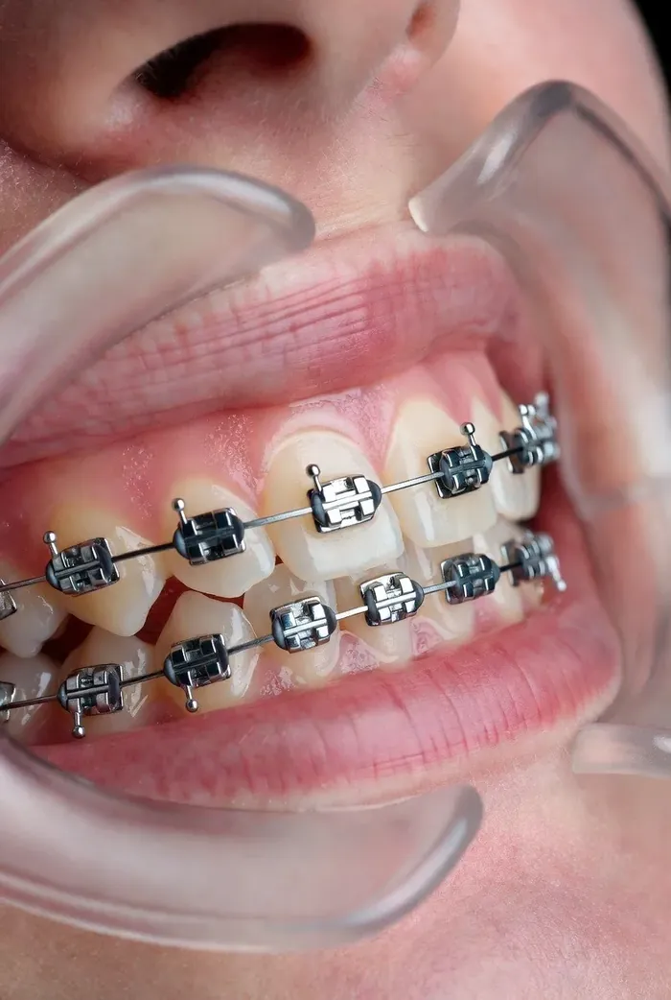
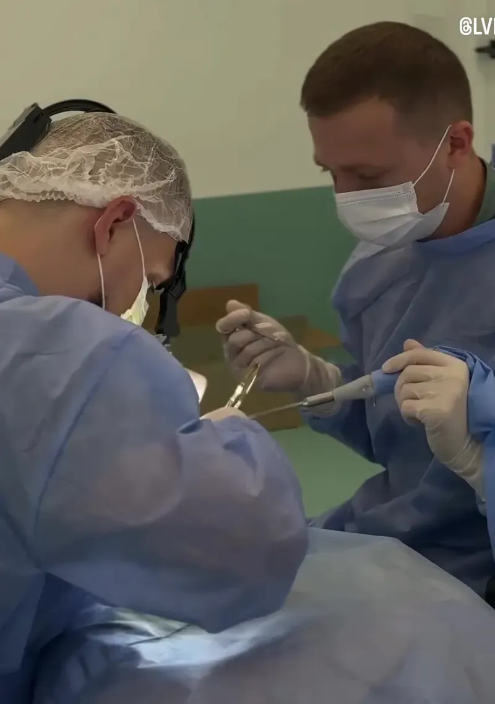
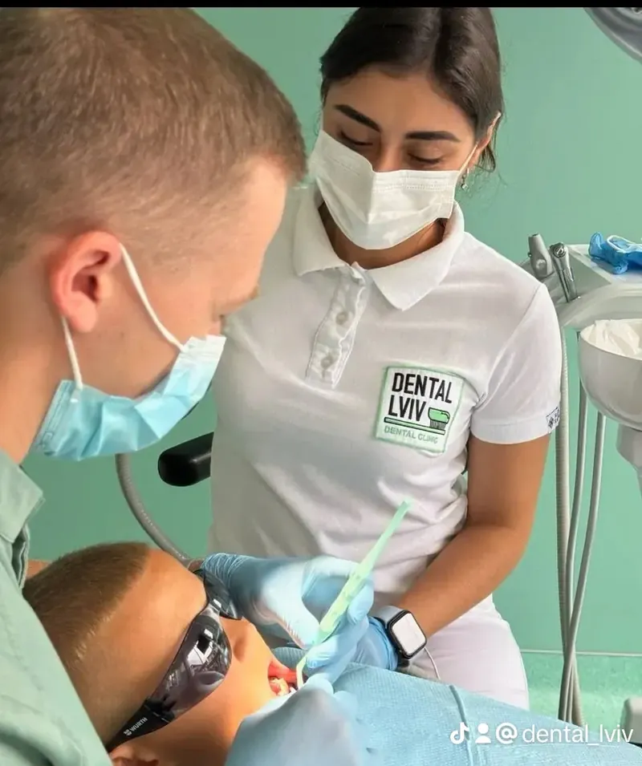
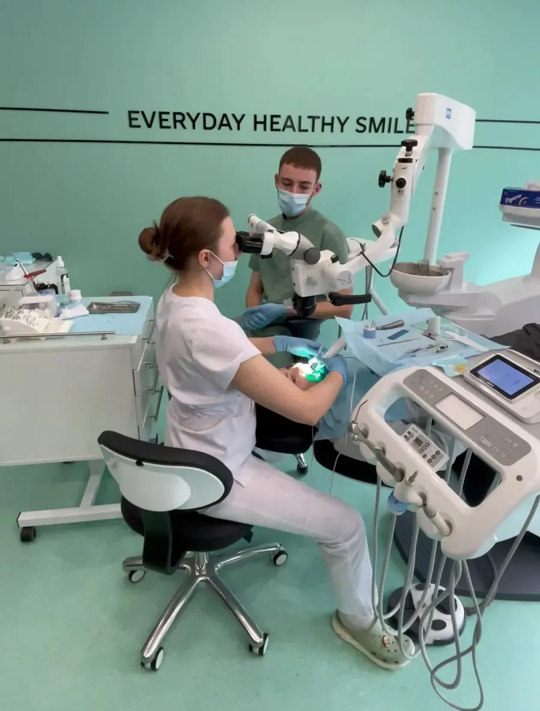
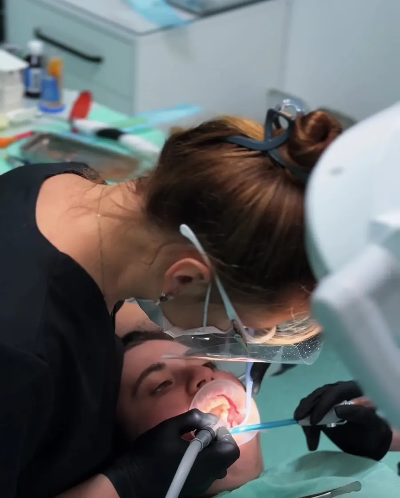
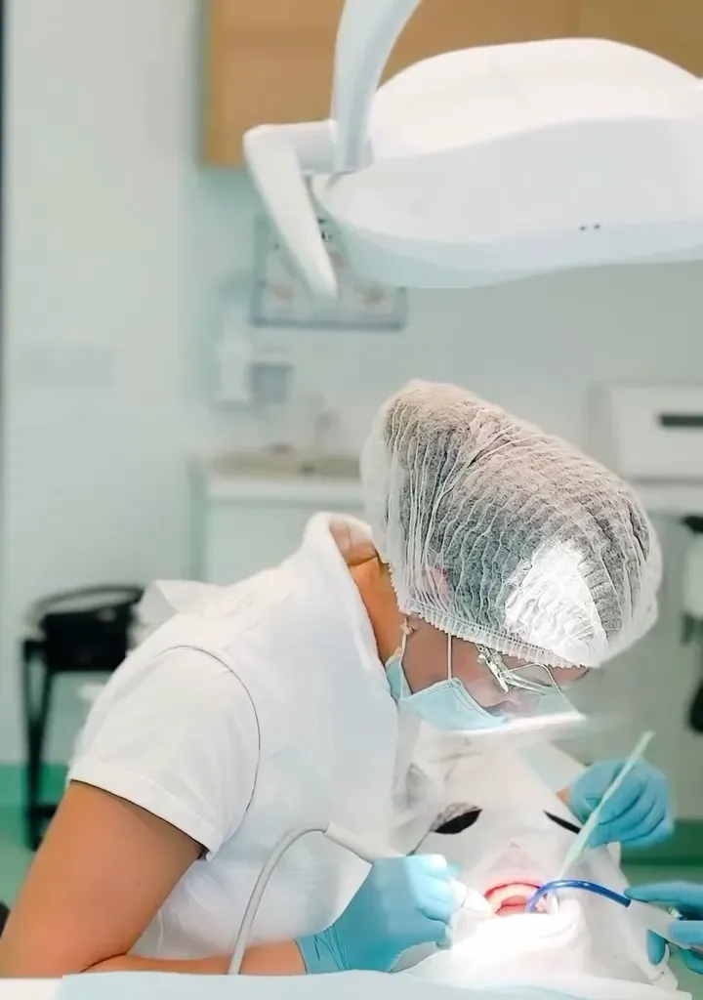
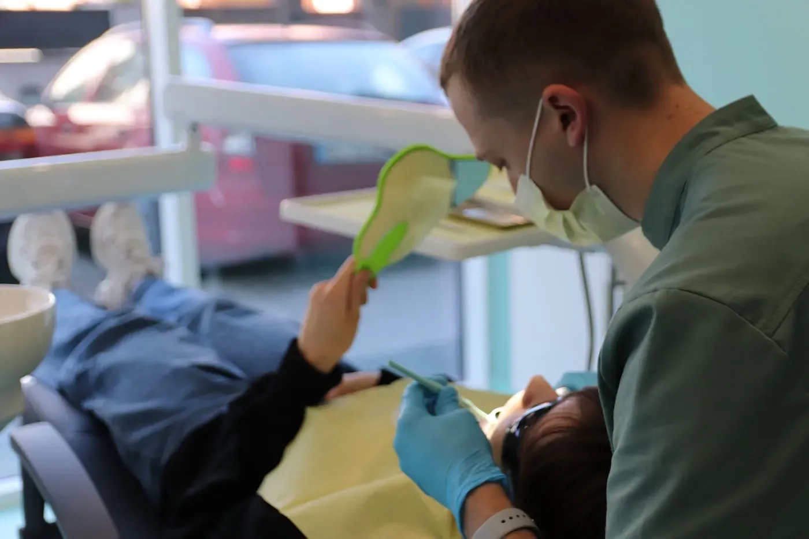
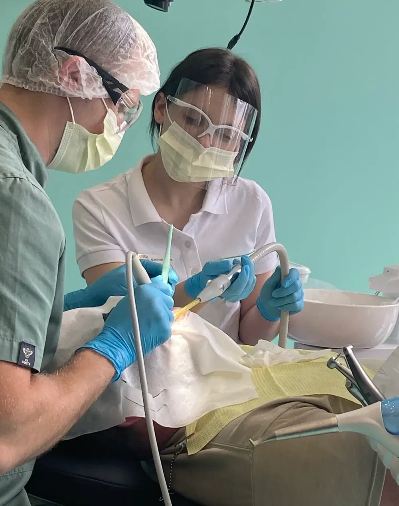
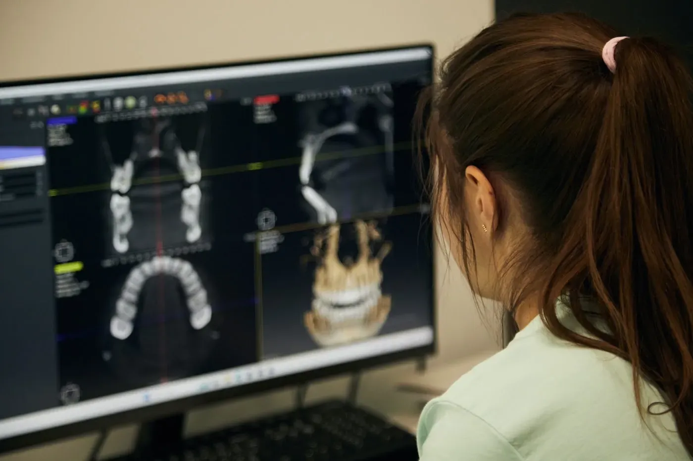

Послуги
Діагностика, лікування, ортодонтія та протезування — в одній клініці і за одним планом. Перший крок завжди однаковий: безкоштовна консультація.

Брекети та ортодонтія
Вирівнюємо зуби і виправляємо прикус у дорослих і дітей. Лікування — це не лише рівний ряд: важливо, як зуби змикаються, тому фінальні місяці так само важливі, як перші.
- Безкоштовна консультація ортодонта
- Додаткові знімки на старті лікування
- Металеві брекет-системи
- Супровід до зняття брекетів і після

Імплантація та All-on-4 / All-on-6
Відновлюємо один втрачений зуб або всю щелепу. Повне протезування на 4 чи 6 імплантах проходить етапами: операція з тимчасовою конструкцією, потім постійний протез.
- Імпланти Neodent та Osstem
- Хірургічний етап включає імпланти, компоненти, операцію та седацію
- Безкоштовна консультація хірурга та ортопеда
- Повна вартість — до початку лікування

Протезування
Повертаємо комфорт під час їжі та впевненість в усмішці. Підбираємо рішення під клінічну ситуацію і бюджет — від коронки на власний зуб до протезу на імплантах.
- Металокерамічні та цирконієві коронки
- Повністю знімні протези без імплантів
- Умовно-знімні протези на 2 імплантах — фіксуються на кнопках
- Оплата частинами до 12 місяців

Лікування каналів під мікроскопом
Якщо зуб можна зберегти, лікування каналів зазвичай простіше і вигідніше, ніж видалення з подальшою імплантацією. Збільшення допомагає бачити анатомію зуба і знаходити додаткові канали.
- Первинне лікування каналів під мікроскопом
- Повторне лікування раніше пролікованих каналів
- Лікування пульпіту — не відкладайте, навіть якщо майже не болить

Лікування та реставрація зубів
Лікуємо карієс і відновлюємо зруйновані зуби фотополімерними матеріалами так, щоб реставрація повторювала природну форму та анатомію зуба.
- Лікування карієсу
- Художні реставрації фотополімером
- Детальні пояснення кожного кроку — з фото до і після

Професійна гігієна Air-Flow
Знімає пігментований наліт і зубні відкладення, які накопичуються навіть при ретельному домашньому догляді. Зуби стають гладкими й візуально світлішими.
- Чистка Air-Flow
- Зняття зубного каменю
- Знижує ризик карієсу та запалення ясен

Хірургія та видалення зубів
Видаляємо зуби, зокрема складні зуби мудрості. Перед втручанням — діагностика, щоб оцінити розташування коренів і спланувати все заздалегідь.
- Видалення зубів мудрості
- Складні видалення
- Підготовка до імплантації

Гнатологія та сплінт-терапія
Індивідуальний сплінт допомагає правильно розподілити навантаження, стабілізувати положення нижньої щелепи та зняти перенапруження жувальних м’язів.
- При бруксизмі та скреготінні зубами
- При болю чи дискомфорті в щелепі
- При перенапруженні жувальних м’язів

КТ-діагностика
Комп’ютерна томографія показує щелепу в 3D. Це основа для точного плану імплантації, лікування каналів і ортодонтії.
- Тривимірний знімок щелепи
- Планування імплантації
- Контроль результату лікування
Не знаєте, з чого почати?
Зателефонуйте — адміністратор підбере лікаря і зручний час. Консультація безкоштовна.
098 923 23 81